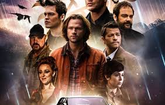

| conheça um pouco dos filmes goticos | familia addams | sombras da noite | sweeney todd | supernatural |
|---|---|---|---|
|
|
|
|
 |
Filmes e séries de temática gótica exploram um universo rico em atmosfera sombria, mistério e romance, frequentemente ambientado em castelos antigos, vilas isoladas ou paisagens nebulosas. A estética gótica, com sua paleta de cores escuras, cenários decadentes e personagens complexos, cria uma sensação de suspense e fascínio.
comuns: Atmosfera sombria e misteriosa: A atmosfera é crucial, construída através de iluminação baixa, sombras profundas e uma sensação constante de perigo iminente. Segredos obscuros e eventos inexplicáveis são comuns. Castelos e mansões antigas: Estruturas imponentes e decadentes, frequentemente com passagens secretas e histórias perturbadoras em seu passado, servem como cenário principal. Esses locais simbolizam o peso da história e a decadência da nobreza. Personagens complexos e atormentados: Os personagens góticos são frequentemente complexos, com motivações obscuras e segredos ocultos. Eles podem ser vítimas de suas próprias obsessões, ou mesmo vilões com motivações surpreendentes. O sofrimento e a melancolia são temas recorrentes. Romance obscuro e proibido: O amor, muitas vezes proibido ou complicado, é um tema central em muitas narrativas góticas. As relações podem ser marcadas por paixão intensa, segredos e consequências trágicas.
Elementos sobrenaturais: Embora nem sempre presentes, elementos sobrenaturais como fantasmas, vampiros, lobisomens e outros seres sobrenaturais podem adicionar uma camada extra de suspense e terror. Subgêneros e variações: A temática gótica se manifesta de diversas formas, desde o terror gótico clássico, com ênfase no suspense psicológico e na atmosfera, até variações mais modernas que incorporam elementos de outros gêneros, como o romance, o drama e o suspense policial. Podemos encontrar histórias de vingança, mistérios familiares, segredos de família e lendas urbanas.
A temática gótica está presente em obras clássicas como Drácula e Frankenstein, e também em adaptações modernas para cinema e televisão, como A Família Addams, Sombras da Noite, Crimson Peak e séries como Wednesday. A variedade de interpretações da temática gótica garante que haja algo para diferentes gostos. Em resumo, os filmes e séries de temática gótica oferecem uma experiência cinematográfica envolvente, explorando temas universais como amor, perda, culpa e redenção, através de uma lente sombria e fascinante.
Agatha Martinha Galdino França e Ana Carla Santos Alves